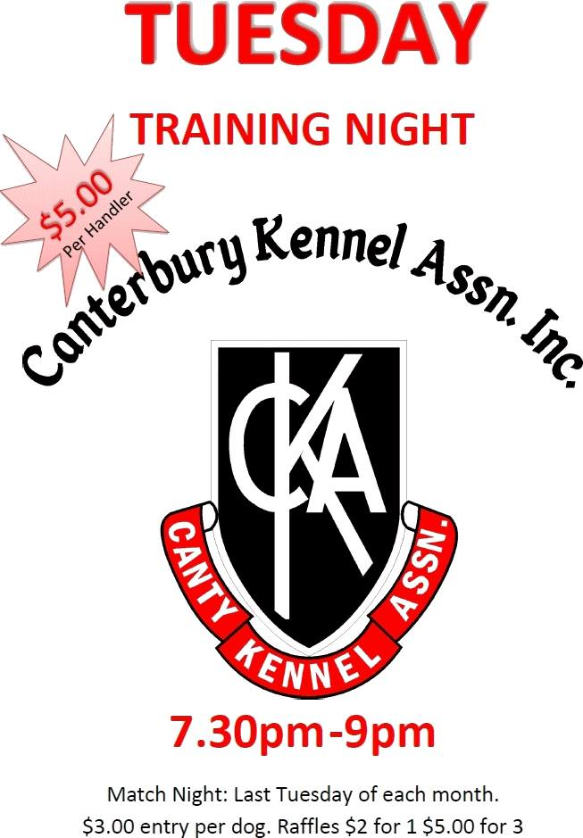
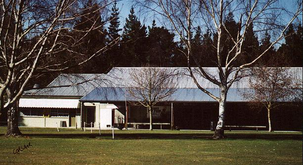
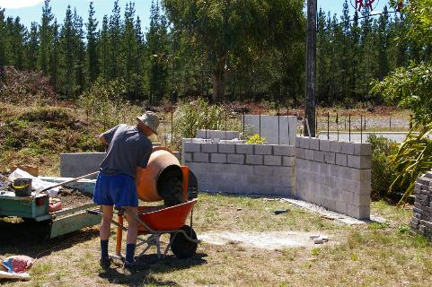

Page last updated: March 2026 — The 2026 event calendar and committee information
have been updated. The 2025 President’s Report is now available.
Supreme All Breeds Show Award
CKA is proud to be a multi-year winner of the Supreme All Breeds Show Award:
1987
1989
1990
1998
2003
2004
2005
2006
2014
2015
2017
2026 Training Programs
| Program | Start Date | Schedule |
|---|---|---|
| Canine Good Citizen Classes | 9 February 2026 | Mondays, 7:00pm |
| Scentwork Training | 11 February 2026 | Wednesdays, 7:00pm |
| Rally-O Training | January 2026 | Wednesdays, 1:00pm |
For Scentwork enquiries, please contact: arend7@xtra.co.nz
Show Training
Show training recommences 27 January 2026 — ALL WELCOME — and from
then every 2nd & 4th Tuesday of the month.

Membership
Membership applications require online payment plus submission of the membership form to the Secretary for committee confirmation. See the Membership page for full details.
Secretary: secretary@cka.co.nz
Venue: Canterbury Kennel Centre, 701 McLeans Island Road, Christchurch 8051
Our Facilities

